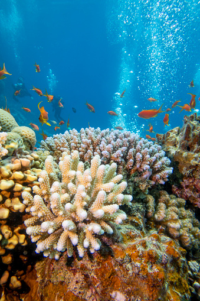
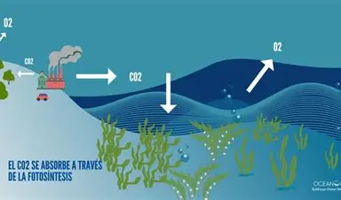
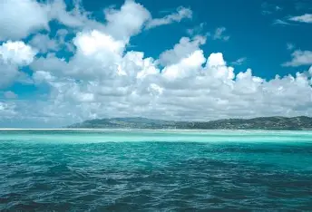
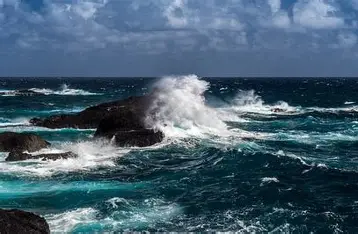
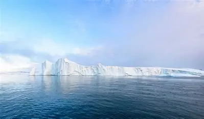
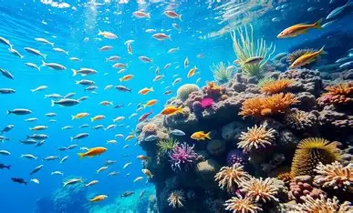

01 — REPTILES · NOAATortuga
Tortuga
marina
Viajeras ancestrales capaces de recorrer enormes distancias entre océanos.
Más allá de la costa existe un universo que cubre la mayor parte de nuestro planeta. Descubre sus criaturas, sus zonas inexploradas y la historia que el océano todavía guarda.
UNA DIMENSIÓN AZUL
El océano es el sistema natural más grande de la Tierra. Regula el clima, almacena calor, produce una enorme cantidad del oxígeno que respiramos y conecta ecosistemas que se extienden desde las costas hasta las zonas más profundas del planeta.
Y, sin embargo, gran parte de él continúa siendo desconocida. Bajo la superficie existe un paisaje de montañas, cañones, volcanes y llanuras donde la vida ha desarrollado formas extraordinarias de sobrevivir.
Descender a las profundidades →UNA SOLA RED OCEÁNICA VIVA Y EN MOVIMIENTO
02 / 11 · VIDA MARINA
Desde organismos microscópicos hasta gigantes que recorren miles de kilómetros, la vida marina ha encontrado una solución para casi cualquier condición imaginable.
Viajeras ancestrales capaces de recorrer enormes distancias entre océanos.

Una de las criaturas más grandes del planeta.

Ciudades submarinas llenas de color y biodiversidad.

DESCENSO VERTICAL
La luz desaparece, la presión aumenta y las reglas de supervivencia cambian. El océano está dividido en zonas, cada una con condiciones y formas de vida únicas.
04 / 11 · DATOS QUE SORPRENDEN
 01El sonido viaja lejos
01El sonido viaja lejosEn el agua, el sonido viaja más rápido que en el aire y puede recorrer grandes distancias según la temperatura y la presión.
NOAA · Sonido oceánico ↗ 02Hay montañas
02Hay montañasLa dorsal meso-oceánica es la cadena montañosa más extensa de la Tierra: recorre cerca de 65.000 kilómetros.
NOAA · Dorsal oceánica ↗ 03La vida brilla
03La vida brillaEntre 200 y 1.000 metros, cerca del 80% de los animales pelágicos estudiados produce luz propia.
NOAA · Bioluminiscencia ↗ 04Respiramos océano
04Respiramos océanoEl océano produce aproximadamente la mitad del oxígeno global; el plancton fotosintético aporta gran parte.
NOAA · Oxígeno del océano ↗05 / 11 · DESCENSO INTERACTIVO
La luz, el color y la vida cambian a medida que descendemos. Recorre desde la superficie hasta las fosas oceánicas.
Luz solar y aguas cálidas: la zona donde comienza la mayor parte de la vida marina.
06 / 11 · EL PLANETA AZUL
El océano funciona como una enorme red conectada. Sus corrientes, ecosistemas y organismos participan en procesos que afectan al clima, la alimentación y la vida de todo el planeta.

El océano absorbe y redistribuye una enorme cantidad de energía. Sus corrientes transportan calor entre regiones y ayudan a moderar las temperaturas del planeta.

El fitoplancton realiza fotosíntesis y forma parte de la base de muchas cadenas alimentarias marinas. Su actividad conecta la superficie del océano con el ciclo global del carbono.

Las corrientes son movimientos continuos del agua impulsados por el viento, diferencias de temperatura y salinidad, mareas y la rotación terrestre.

Manglares, marismas y praderas marinas pueden almacenar carbono en sus plantas y sedimentos, convirtiéndose en ecosistemas relevantes para el equilibrio climático.
CORRIENTES OCEÁNICAS
Las corrientes redistribuyen calor y nutrientes a escala planetaria. Esta visualización de NASA muestra patrones de circulación oceánica y la velocidad relativa del flujo.
MAPA ESQUEMÁTICO · RUTAS SIMPLIFICADAS
Las corrientes superficiales responden al viento; las profundas, a diferencias de temperatura y salinidad.
Red global de corrientes superficiales y profundas.
Redistribuye calor, nutrientes y carbono entre regiones.

07 / 11 · LOS CINCO OCÉANOS
Cada océano posee características geográficas, climáticas y ecológicas diferentes. Juntos forman un sistema global conectado.

01Es el mayor de los cinco océanos y contiene algunas de las fosas y regiones volcánicas submarinas más profundas del planeta.

02Separa América de Europa y África. La dorsal mesoatlántica atraviesa su fondo oceánico.
 03
03Rodeado por África, Asia y Australia, está muy relacionado con los sistemas de monzones del sur de Asia.
 04
04Rodea la Antártida y está dominado por la poderosa Corriente Circumpolar Antártica.

05Es el océano más pequeño y está parcialmente cubierto por hielo marino cuya extensión cambia con las estaciones.

08 / 11 · EXPLORAR LO DESCONOCIDO
Los investigadores utilizan vehículos operados remotamente, submarinos tripulados, sensores, satélites y sistemas de sonar para estudiar lugares donde la presión, la oscuridad y la temperatura dificultan la presencia humana.
09 / 11 · GALERÍA

10 / 11 · UN FUTURO QUE DEPENDE DE NOSOTROS
El océano absorbe gran parte del exceso de calor del sistema climático y recibe las consecuencias de actividades humanas como la contaminación, la sobrepesca y las emisiones de gases de efecto invernadero.
UNA INVITACIÓN
El océano no necesita que lo admiremos desde lejos. Necesita que entendamos cómo funciona, por qué importa y qué decisiones pueden ayudar a conservarlo.
Volver a la superficie ↑